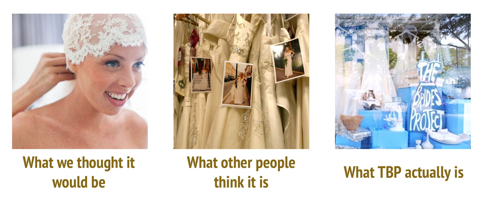
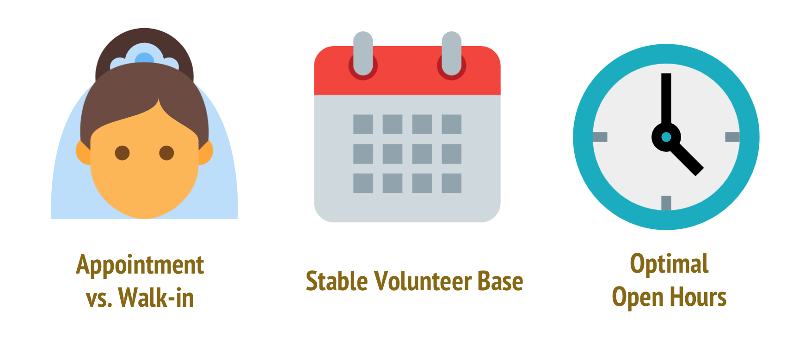
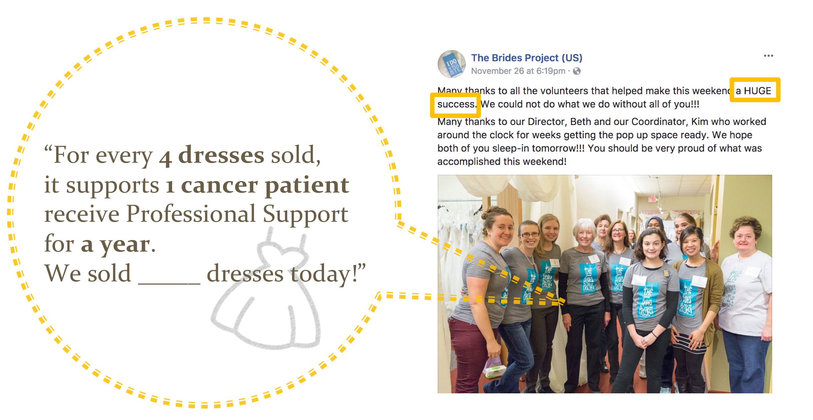

The Brides Project
UX Research, Service Design & Content Strategy
In this 3-month group project, we, as a team of 4 student consultants, seek to figure out the optimal open hours for The Brides Project, a volunteer-based non-profit bridal shop, using contextual inquiry as well as user research methodology.
Client Overview
The Brides Project (TBP) is a non-profit bridal shop founded in September of 2011, run by volunteers and a small group of paid, part-time staff. TBP sells previously-worn and donated wedding dresses at discounted retail prices. All of these profits are then used to support local cancer education, counseling, and support programs at the Cancer Support Community (CSC) of Greater Ann Arbor.
Problem Statement
For the past few years, The Brides Project has experienced surging customer demand, which leads to the following problems:
- Walk-in Customers: To fulfill customer demand, since November 2016, The Brides Project has extended open hours and started to accept walk-in customers while maintaining the by-appointment service.
- Volunteer Base: Recently, management has been concerned that the existing volunteer base may not be sufficient to support all the changes in open hours and service expansion.
- Optimal Open Hours: Management wants us to identify the optimal staffing model and open hours that will alleviate volunteer burn-out, maintain customer satisfaction, and ultimately drive sales growth of the store.
Methodology & Research Process

In order to determine the underlying causes of the problem addressed by The Brides Project, our team used various methods to gather detailed and comprehensive data:
- Interview Protocol: We came up with 4 versions of interview questions based on the assigned problems and target interviewees.
- Interview: We conducted 7 interviews, including 5 formal interviews with the management and volunteers and 2 semi-constructed interveiws with volunteers in the bridal shop. The interviews allowed us to gather insights from employees at all levels in the organization.
- Files: After interviewing the director, she provided us with multiple spreadsheets, which included sales data, customer satisfaction surveys and results, and volunteer schedules.
- In-store Observation: While we were in the bridal shop for the interviews, we were constantly aware of the activity that was occurring around us. We also observed an entire shift of a volunteer in order to better understand the consultant process and the relationships between consultants and customers.

Affinity Wall: Following each interview, we held interpretation sessions to discuss our findings and generate affinity wall notes. Each note contained one idea obtained from the interview, and overall, we generated about 300 notes.

Content Analysis: We analyzed each post and the overall theme of TBP’s Facebook and Instagram accounts to determine what type of information TBP shares with consumers, how they communicate with their customers, and how they use the platforms to recruit and retain volunteers.
Findings
Finding 1: It is TBP’s uniqueness of circumstance that allows them to stand out from other bridal shops

- Low Budget & Hight Quality: Compared to normal bridal shops, TBP operates under low budget. However, informal in-store etiquette, and affordable designer dresses still allow TBP to offer high-quality service.
- Grassroot & Market: Despite the grassroots approach to social media, and word-of-mouth advertisements, TBP still raise awareness and interest. This is the main reason why TBP’s primary market is still limited to Michigan.
- Cancer: TBP’s great cause mission to fight cancer is what attracts both volunteers and brides, which helps both with donations and volunteer recruitment.
Finding 2: The quality relationships between management and volunteers, and between volunteers and brides drive high customer satisfaction

- Tailored Experience: Well-trained volunteers with diverse skills allow TBP to offer tailored services to different brides.
- Friendly Environment: Volunteers have busy outside-lives that management takes into account and uses to maximize efficiency and service.
- Cooperation: Management is receptive to the opinions and needs of their volunteers and maintain a friendly relationship that subverts the hierarchy of the organization.
- Anticipation/Sensitivity: Anticipating the various needs of the brides (dress size, comfortability, adjusting hours) are ways that volunteers go above and beyond to serve customers.
Finding 3: Some day to day operations are the main sources of frustration and need improvement

- Problem Brides: The primary negative human interaction is with negative and picky brides, but rarely is it between volunteers.
- Supply & Demand: The lack of an optimal staffing model is preventing TBP from adding stable open hours to meet growing demands.
- Technology & Follow-up: Some senior volunteers struggled with the technology used in store. Also, while there is a personal follow-up, there seems to be no consistent professional follow-up procedure with customers.
- Communication & Interaction: Due to the complexity of CSC, which TBP is part of, communication and interaction gaps occur because of the bureaucracy.
Finding 4: TBP emphasizes the recruitment, training, and retention of its volunteers

- Recruitment: Most volunteers hear about volunteering at TBP through word of mouth; however, some learn about it via volunteer websites. Still, some volunteers do not believe that online recruitment is an effective way to recruit more volunteers.
- Training: The key elements of training are one-on-one shadowing and mentoring, which allows for flexibility and creates a system of support for new volunteers. However, because training is not always consistent, some volunteers are unaware of the store’s basic operations or policies.
- Management & Volunteer: Management is accommodating and not overbearing on their volunteers because they want to keep volunteers engaged and satisfied, which helps keep a healthy base of long term volunteers.
- Communication & Interaction: Besides their shifts, volunteers mainly interact with each other via email and not in person.
Recommendations

Volunteers play a fundamental role in TBP’s product and service deliveries, which enable TBP to operate at the low-cost model. Following the expansion of store open hours and service to walk-in customers, recruiting more volunteers and maintaining a stable volunteer base has become more critical to TBP’s long-term success.
To address the findings from the interviews and help TBP have sustainable growth, we therefore present four recommendations below:
Recommendation 1: Strengthen Social Media Presence
Currently, TBP runs 2 social media pages:
- Facebook
- Announce extra open hours
- Promote special sales events
- Share volunteer stories and experiences
- Instagram
- Post photographs of brides who purchased their gowns from TBP
However, some more important things are missing:
- TBP’s uniqueness as a cancer-support NPO is not emphasized well
- No recruitment information can be found despite the increasing demand for volunteers.
- There does not appear to be a standard operational process or screening mechanism for its online social media strategies.

Hence, Wonder Women provided a Social Media workshop and detailed guidelines on how to manage social media pages. The following topics / advice are covered:
- Clarify and emphasize information regarding open hours, the mission, and its non-profit status
- Posts about extra open hours would be more effective if announced earlier and promoted heavily
- Emphasize how TBP is different because that is why they are successful
- When announcing hours, do so on the appropriate platforms (an Instagram caption leaves the post jumbled and hard to read)
- Use photos that are of high definition and shows images of volunteers at work
- Only post high definition photos and images of volunteers at work shows the professionalism of TBP as a bridal shop
- Keep a uniform “theme” (color scheme, types of the same “I said yes to the dress!” photo, photos of dresses done in specific ways)
With clear guidelines and examples provided, TBP can develop better understanding of content management strategies and the mechanism of how social media works.
Recommendation 2: Make Shop Feel More Homey

The shop, located on the ground floor of a small shopping area, is well-lit and decorated with several dressing rooms and sitting areas. Bridal gowns occupy the same floor and are not in holding areas. Currently, the front of the shop holds the TBP logo and a few framed photos along with a sign-in sheet and info placard.
Instead of replicating a bridal shop feel, TBP could showcase their commitment to their brides who come to TBP for many different reasons.
- Pinterest Wall
- Photos that customers send in of their wedding days in their gowns which may inspire and motivate the volunteers.
- Photos of volunteers at events, bonding, and working fun campaigns can highlight the rewarding value of volunteering at TBP, perhaps inspiring both brides and prospective volunteers into becoming engaged with the organization.
- Guest Book
- Instead of the sign in clipboard at the store front, reminiscent of guest books at special occasions (like weddings), would allow brides to leave comments for their volunteer consultants and allow volunteers to read their own praise.
These tactics to make the shop more "homey" would be an addition to the social media outreach that TBP undertakes and create an immediate wow-factor to the store.
Recommendation 3: Engage Volunteers with One Another

Currently, there is very little engagement between volunteers outside of their shifts. Outside of the shop, the main form of communication between volunteers is via email. Usually these email interactions regard covering each other’s shifts.
Here, we suggest some tactics to improve the situation on a daily basis:
- Encourage staff to work with someone they have not worked with before and would like to get to know.
- Volunteer-generated recognition of their peers is a way to positively engage volunteers with one another.
- Place a box in the store so that volunteers can write a note of something that they recognized another volunteer doing well.
In addition to engaging volunteers on a day-to-day level, annual and semi-annual events should also be implemented to accomplish this goal:
- Organize an annual all-staff celebration away from the shop or CSC.
- Our team learned that this has been attempted once in the past, but it is worth trying again.
- In addition to being a celebration, it should also be a volunteer recognition event.
- Fun is an important aspect of volunteer satisfaction and retention, so it should be in a space that is attractive to the majority of volunteers.
- The event can also serves as a way for volunteers to get to know each other outside of a work environment.
An all-staff meeting is not recommended. Our team recognized that volunteers are busy and it can be somewhat difficult to schedule a time where the most possible people are available.
Recommendation 4: Recruitment Outreach
Although TBP has gradually developed its reputation as a volunteer-based bridal salon in Ann Arbor, the effectiveness of volunteer outreach has room for improvement:
1. Community Engagement
- Limited connection between TBP and the University of Michigan (UM) community and the greater Ann Arbor community. Not many people at UM are aware of this community engagement opportunity.
The volunteer sign-up form on TBP’s official website
2. Recruitment
- We discovered in volunteer sign-up form on the official website that TBP recruits not only bridal consultants, but also other positions, such as outreach, social media, and events.
- However, without promotion on social media, people would not know about the various volunteer opportunities if they did not visit the official website.
We generated 2 personas of potentilal volunteers to understand their preferences and motivations and design target outreach programs accordingly:

Emily, UM student
- Interested in applying what she learns in class to impact projects
- Her schedule is less flexible and mostly occupied by the school work

Annie, Resident in Ann Arbor
- Passionate about community engagement
- Apart from her family duty, she may have a manageable job that allows her to participate community events
3. Generate Volunteer-Centric Content on Social Media
- Use quotes of why people volunteer as the title or the hook of the post to attract potential candidates’ attention
- Include information with the type of work volunteers will do, on-board training, and time commitment along with their professional looks
- Whenever possible, link recruitment forms to social media posts
- Encourage volunteers to spread the word by sharing social media posts from TBP pages and tag people in the posts/photos to gain more exposure

This is an example of an image, with a great volunteer portrait, that could be used to show professionalism of volunteers at TBP.
Conclusion
Through contextual inquiry, we sought to address The Bride’s Projects desire to determine optimal open hours and staffing model. In addition to many findings, our team ultimately discovered that in order to determine optimal open hours, the organization must recruit more volunteers. TBP should strengthen its social media presence, make the shop feel more homey, engage volunteers with each other, and emphasize its volunteer recruitment outreach as a way to increase volunteer satisfaction and customer demand.
Limitations
- Minimal interaction with customers: Part of determining optimal open hours would have required interviews with customers, as optimal open hours requires a balance of the needs of TBP and customers.
- Interviewees: Interviewees were picked by the director, so these volunteers may not be fully representative of volunteers’ opinions and experiences.
Takeaway

This is my first time to work on a truly multidisciplinary team, which is both cross-cultural and cross-profession. However, contrary to the barrier I expected, my team, Wonder Women, worked very well together, from the start to the end. One of the key element that leads to the success of work is that we trust and respect each members’ profession.
There are 4 members in our team – two are Library and Archive students who are native speakers in English while the other two non-native members focuses on HCI with knowledge and background in economics or business. We figure out problem as a team but work independently on what we’re proficient in before we meet to synthesize our output.
In addition, through the project with TBP, we really learn how to think critically and analyze problems rationally. Surprisingly, it turned out that the problem we found about TBP was not the original problem TBP asked us to solve since there was more data that they have to do to collect in order to figure out the solutions to their original problem. I’m very proud of my team for being able to think outside the box and identify the real problem and solutions that our client should look into.
Shih-Ting (Amy) in TBP
My Role
- UX Consultant
- Design Lead
What I Did
- UX Research
- Secondary Research on Queueing Theory
- Content Strategy